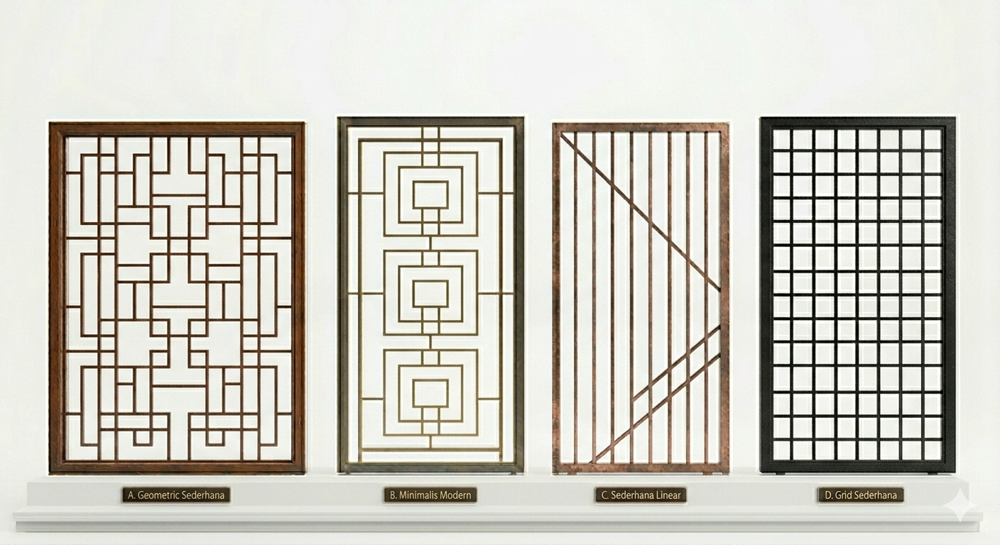

Deskripsi Teralis
Teralis adalah produk unggulan Anugrah Steel yang berfungsi untuk meningkatkan keamanan rumah, jendela, dan pintu,
sekaligus menambah nilai estetika bangunan. Teralis dibuat dari bahan besi berkualitas dengan desain yang dapat disesuaikan.
Jenis-Jenis Teralis
- Teralis Jendela Minimalis – cocok untuk rumah modern.
- Teralis Pintu – menambah keamanan pada pintu utama.
- Teralis Klasik – memiliki motif lengkung dan elegan.
- Teralis Custom – dibuat sesuai ukuran dan permintaan pelanggan.
Kelebihan
- Kuat dan kokoh
- Menambah keamanan rumah
- Desain fleksibel dan modern
- Tahan lama dan mudah dirawat
Pesan Sekarang